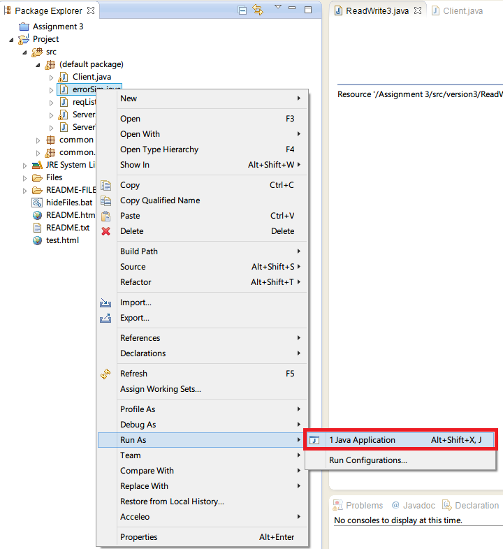
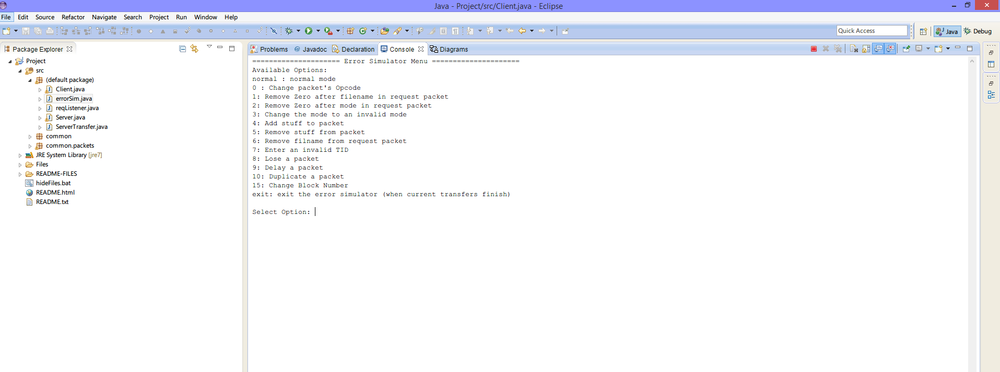

General Notes
- We have went through a lot of trouble to make this README documents. They are not in text format, but HTML. This allows us to make our documentation beautiful and makes it convinient for you to read. We have done so with permission of TA, Mr. Vilas Joshi. I hope you understand that I only had your convinience in mind makign this. It took me more than 4 hours to get to where I am with this.
- If possible, view these documents on Firefox as we have added custom font smoothing for it. Everything will look cleaner.
- First step after importing the java project in Eclipse should ALWAYS be to run the setupTestFiles.java file. This file will make the file chocolate.txt in server-files and muffins.txt in client-files hidden as well as make bananaCake.txt in server-files and cantEatThis.txt in server-files read only.
- When running any java file, do so by right clicking on the class in Package Explorer and clicking on Run As > Java Application instead of clicking the play button. The play button is not context aware and sometimes launches unintended classes. 
- Before testing the error cases, please ensure the permissions of each file (hidden/readonly) is working. As some school computers might block batch files. If unclear, visit This Link to see how.
- During testing/Interacting with Console, it is recommended that you maximize the console windows and minimize the code view. This will allow you to see the full menues and all the logs properly.
- To make sure we are on the same page, go to Window > Reset Prespective
- Click the following buttons...
- After doing so running a java file will put it right in the center
{kind=link}
After
Click To Enlarge
{kind=link}
Click To Enlarge